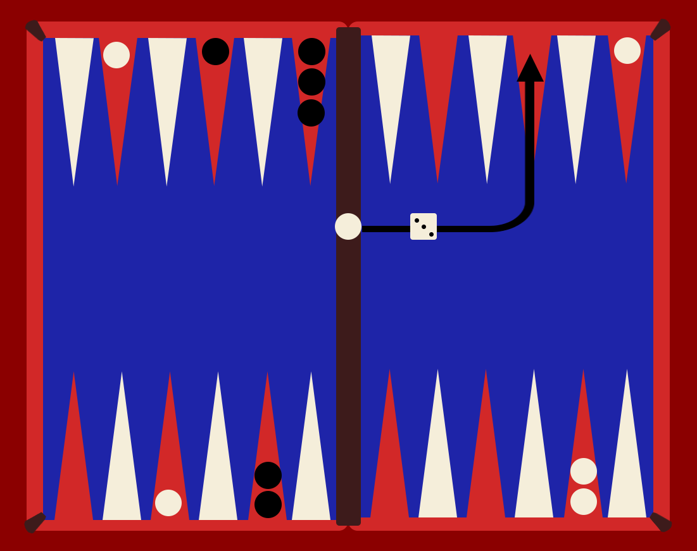
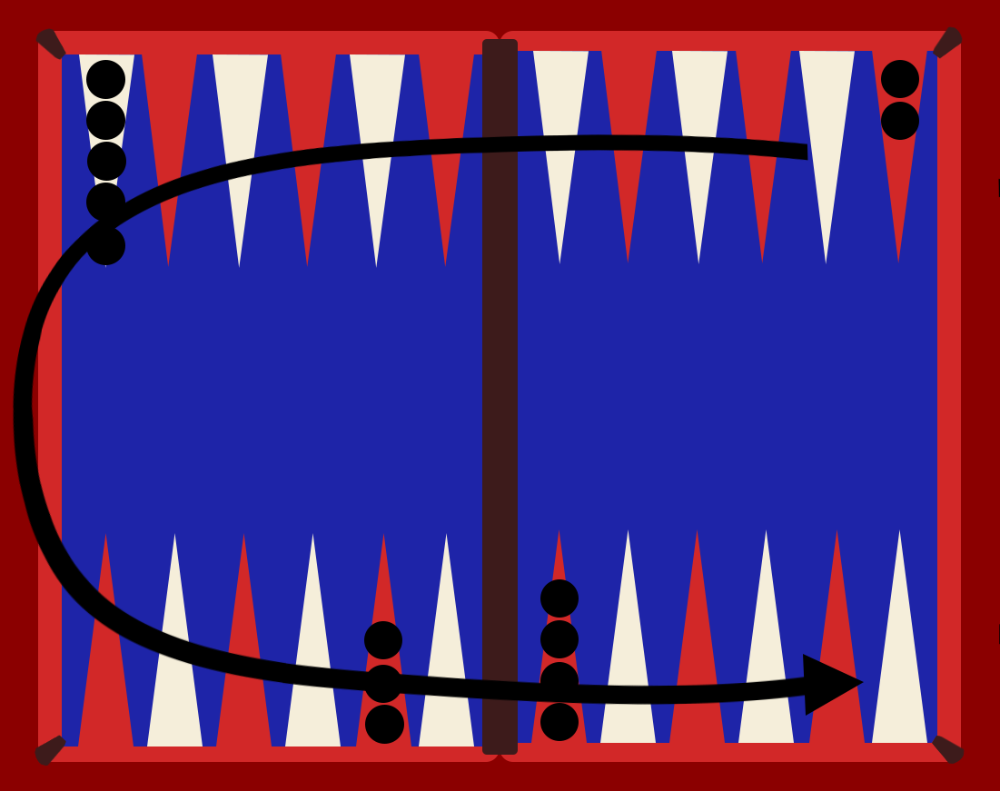
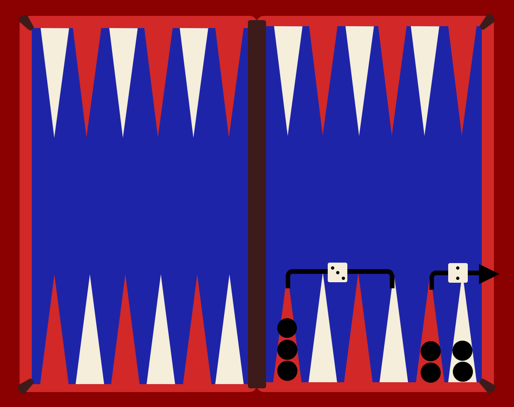

The objective of the game is to move all of one’s own checkers to the home board and then remove the pieces from the board entirely. The players move their checkers in opposing direction following a horseshoe path.



- Move your pieces counter-clockwise from the upper right by entering the starting position's number followed by the finishing position's number, while your opponent's move clockwise from the bottom right
- The game starts with both players each rolling a single die to determine who goes first. The one with the higher roll starts and uses the dice to make his first move.
- Each turn, a player rolls the dice. The numbers shown decide how far the player may move their pieces.
- If the same number is rolled on both dice, the player gets 4 moves.
- As you move a piece, you may move onto a position that contains no opposing stacks.
- If you move a piece onto an opposing piece, that piece gets removed and placed onto the middle of the board. That piece's owner must then return it back onto the board, starting from the beginning. They may not perform any other moves until all their pieces are back on the board.
- Once all your pieces have made it around the board and into your home (the first 6 position from the right side facing you), you may start removing pieces. A piece can bear off if: you roll a number that corresponds exactly to how far the piece would have to travel to exit the board or an unused die has a higher value than is required to bear any piece off. In which case, you may bear off the piece that's furthest from the end.
- The player who manages to bear off all their pieces first is the winner.
- To take a piece out of the board the finishing position must be 0 and to reintroduce a piece back into the board the starting position must be 0.
How to play: